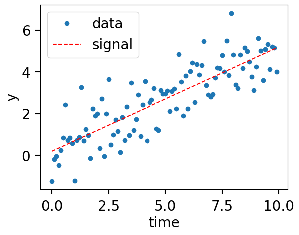
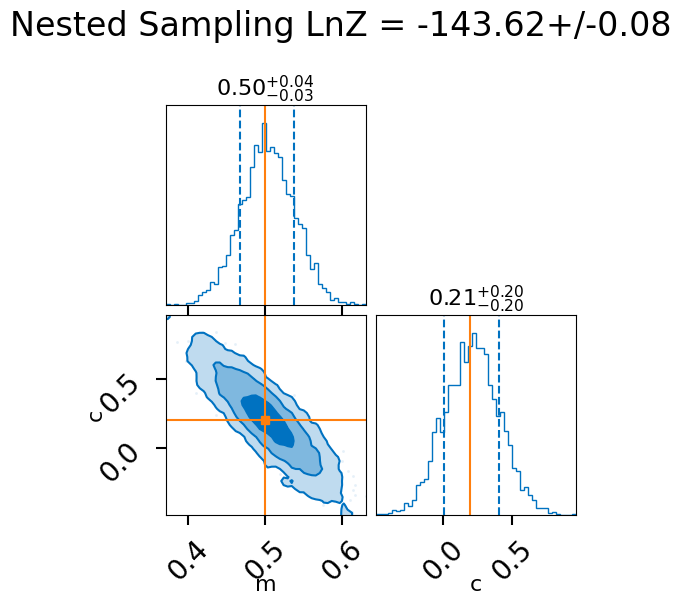
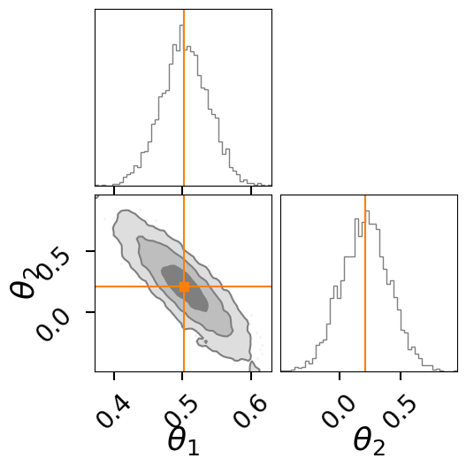
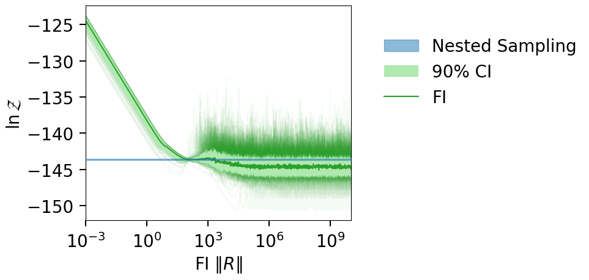

EX1: Linear regression#
We first consider a simple linear regression model with a Gaussian likelihood. We compute the evidence for the model first with nested sampling, and then with the fourier integration method.
%load_ext autoreload
%autoreload 2
%matplotlib inline
The autoreload extension is already loaded. To reload it, use:
%reload_ext autoreload
import os, shutil
import numpy as np
import warnings
from matplotlib import pyplot as plt
import bilby
import logging
from funnel.plotting import plot_fi_evidence_results
from funnel.fi_core import get_fi_lnz_list
CLEAN = False
OUTDIR = 'out_line'
if os.path.exists(OUTDIR) and CLEAN:
shutil.rmtree(OUTDIR)
os.makedirs(OUTDIR, exist_ok=True)
np.random.seed(42)
warnings.filterwarnings("ignore")
logging.getLogger('bilby').setLevel(logging.CRITICAL)
Generate some data#
def model(time, m, c):
return time * m + c
injection_parameters = dict(m=0.5, c=0.2)
sampling_frequency = 10
time_duration = 10
time = np.arange(0, time_duration, 1 / sampling_frequency)
N = len(time)
sigma = np.random.normal(1, 0.01, N)
data = model(time, **injection_parameters) + np.random.normal(0, sigma, N)
fig, ax = plt.subplots()
ax.plot(time, data, "o", label="data")
ax.plot(time, model(time, **injection_parameters), "--r", label="signal")
ax.set_xlabel("time")
ax.set_ylabel("y")
ax.legend();

Nested sampling LnZ Calculation#
class GaussianLikelihood(bilby.likelihood.Analytical1DLikelihood):
def __init__(self, x, y, func, sigma=None, **kwargs):
super(GaussianLikelihood, self).__init__(x=x, y=y, func=func, **kwargs)
self.sigma = sigma
def log_likelihood(self):
return np.sum(- (self.residual / self.sigma) ** 2 / 2 - np.log(2 * np.pi * self.sigma ** 2) / 2)
likelihood = GaussianLikelihood(time, data, model, sigma)
priors = bilby.core.prior.PriorDict(dict(
m=bilby.core.prior.Uniform(0, 5, "m"),
c=bilby.core.prior.Uniform(-2, 2, "c")
))
label = 'linear_regression'
res_fn = f"{OUTDIR}/{label}_result.json"
if os.path.exists(res_fn):
result = bilby.read_in_result(res_fn)
else:
result = bilby.run_sampler(
likelihood=likelihood,
priors=priors,
sampler="dynesty",
nlive=1500,
outdir=OUTDIR,
label=label,
injection_parameters=injection_parameters,
)
lnz, lnz_err = result.log_evidence, result.log_evidence_err
print(f"LnZ: {lnz:.2f}+/-{lnz_err:.2f}")
print(f"lnBF: {result.log_bayes_factor}")
result.posterior.head()
LnZ: -143.62+/-0.08
lnBF: nan
| m | c | log_likelihood | log_prior | |
|---|---|---|---|---|
| 0 | 0.371619 | 0.960707 | -144.432015 | -2.995732 |
| 1 | 0.600449 | -0.023405 | -143.965399 | -2.995732 |
| 2 | 0.630136 | -0.349366 | -143.885341 | -2.995732 |
| 3 | 0.410890 | 0.399176 | -143.800271 | -2.995732 |
| 4 | 0.537964 | 0.386132 | -143.491811 | -2.995732 |
fig = result.plot_corner()
fig.suptitle(f"Nested Sampling LnZ = {lnz:.2f}+/-{lnz_err:.2f}", y=1.1);
fig

FI LnZ calculation#
lnz_file = f"{OUTDIR}/lnz.npz"
os.remove(lnz_file)
lnzs, r_vals, _ = get_fi_lnz_list(result.posterior, num_ref_params=100, cache_fn=lnz_file, )
|funnel|INFO| Calculating FI LnZ with 100 reference points and a posterior of size:(4050, 2)
|funnel|INFO| Posterior columns:
c
log_likelihood
log_prior
m
best_lnzs, _, best_sample = get_fi_lnz_list(result.posterior, num_ref_params=1, weight_samples_by_lnl=True)
|funnel|INFO| Calculating FI LnZ with 1 reference points and a posterior of size:(4050, 2)
|funnel|INFO| Posterior columns:
c
log_likelihood
log_prior
m
import matplotlib.pyplot as plt
import numpy as np
import corner
fig = result.plot_corner(color="tab:gray", truth=None, label_kwargs={"fontsize": 26}, quantiles=None, labels=[r"$\theta_1$",r"$\theta_2$"])
# overplot the FI points
for i, s in enumerate(best_sample):
corner.overplot_lines(fig, s, color=f'C{i+1}')
corner.overplot_points(fig, [[np.nan if t is None else t for t in s]],color=f'C{i+1}', marker='s', markersize=7)
fig

plt_kwgs = dict(lnzs=lnzs, r_vals=r_vals, sampling_lnz=[lnz + lnz_err, lnz - lnz_err], )
fig = plot_fi_evidence_results(**plt_kwgs,plot_all_lnzs=True,plot_ci=False)
ax = fig.gca()
ax.plot(r_vals, best_lnzs.ravel(), color='C1', alpha=0.3)
ax.axhline(np.median(best_lnzs), color='C1')
ax.set_xlim(10, 10000)
ax.set_ylim(-147, -140)
fig.tight_layout()
/tmp/ipykernel_592353/845767860.py:9: UserWarning: The figure layout has changed to tight
fig.tight_layout()
fig = plot_fi_evidence_results(**plt_kwgs, plot_all_lnzs=True)
fig.tight_layout()

fig = plot_fi_evidence_results(**plt_kwgs, plot_all_lnzs=True)
ax = fig.gca()
ax.set_xlim(10, 1e3)
ax.set_ylim(-145, -140)
fig.tight_layout()
HI
Comparing FI LnZ values#
Here we compare two FI LnZ vs R curves for two different set of reference points.
import matplotlib.pyplot as plt
import numpy as np
np.random.seed(42)
sampling_lnz, sampling_lnz_lnz_err = result.log_evidence, result.log_evidence_err
sampling_lnz = [sampling_lnz + sampling_lnz_lnz_err, sampling_lnz - sampling_lnz_lnz_err]
lnzs, r_vals, fi_samp = get_fi_lnz_list(result.posterior, num_ref_params=2)
plt.figure(figsize=(12, 6))
for i, lnz in enumerate(lnzs):
plt.plot(r_vals, lnz, label=f"FI LnZ (Point {i + 1})", alpha=0.7)
plt.xscale("log")
plt.xlim(0.5, max(r_vals))
plt.ylim(-150, -135)
plt.xlabel(r"FI $R$")
plt.ylabel(r"$\ln{\mathcal{Z}}$")
plt.fill_between(
x=r_vals,
y1=min(sampling_lnz),
y2=max(sampling_lnz),
color="tab:gray",
interpolate=True,
alpha=0.5,
label="Nested Sampling LnZ",
zorder=10,
)
plt.legend(loc=(1.1, 0.7), frameon=False)
plt.tight_layout()
import corner
fig = result.plot_corner(color="tab:gray", truth=None, label_kwargs={"fontsize": 26}, quantiles=None, labels=[r"$\theta_1$",r"$\theta_2$"])
# overplot the FI points
for i, s in enumerate(fi_samp):
corner.overplot_lines(fig, s, color=f'C{i}')
corner.overplot_points(fig, [[np.nan if t is None else t for t in s]],color=f'C{i}', marker='s', markersize=7)
fig
|funnel|INFO| Calculating FI LnZ with 2 reference points and a posterior of size: (3923, 2)